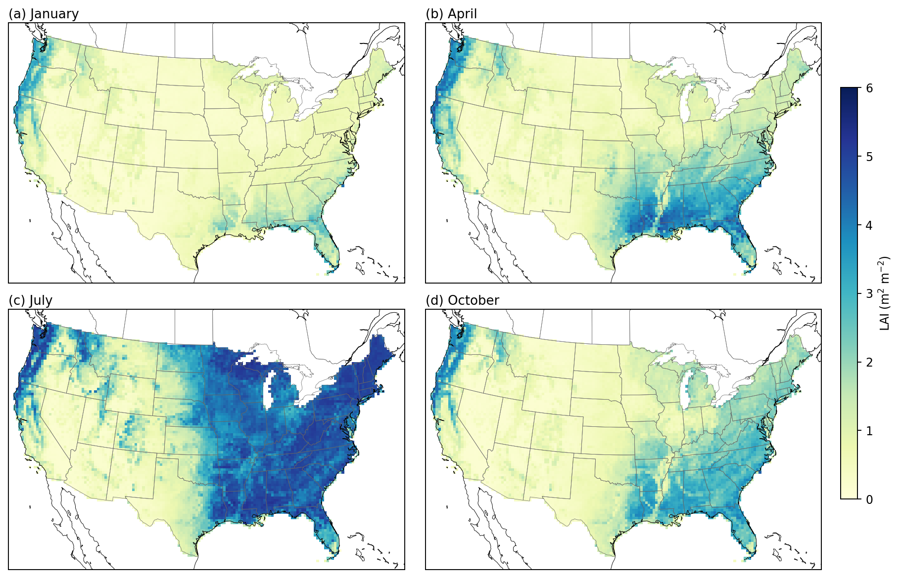
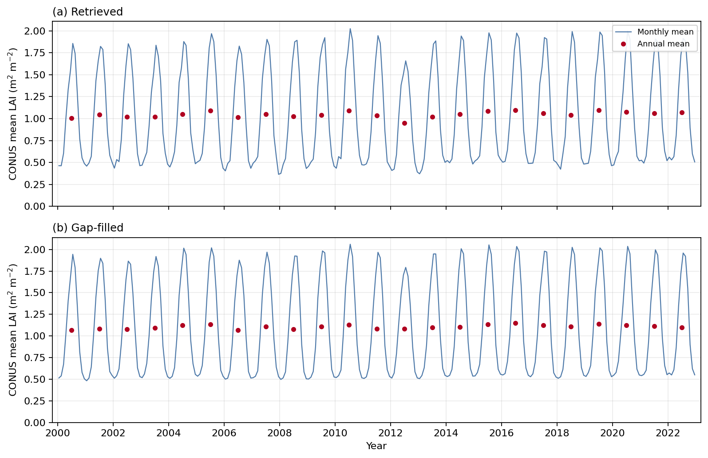
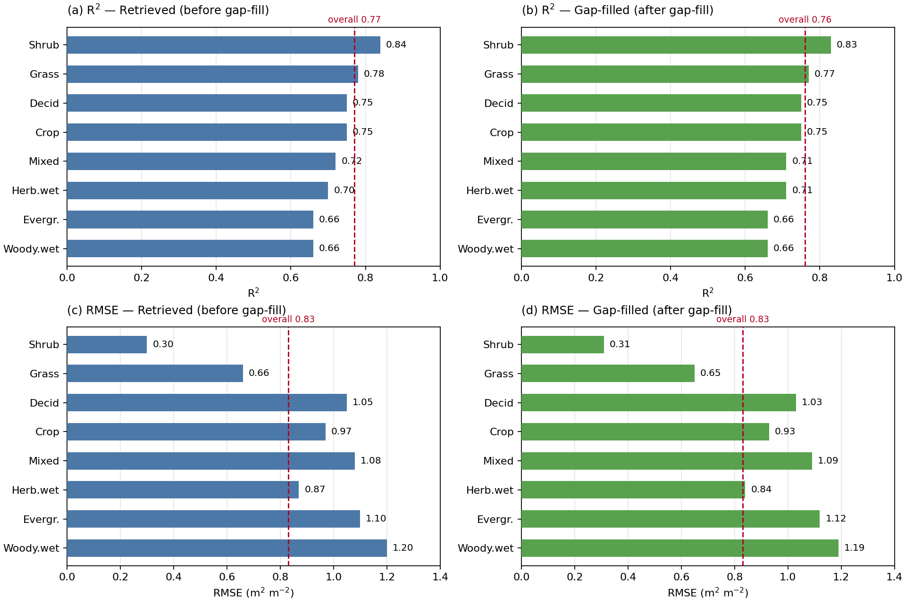

Contiguous United States · 2000–2022
Twenty-three years of monthly Leaf Area Index at Landsat resolution — wall-to-wall across the contiguous United States, gap-filled, and openly available.
Interactive viewer
Choose a year and month, switch between the LAI, quality-assurance, and valid-observation layers, and click any pixel to plot its full 2000–2022 time series. Served live from Google Earth Engine.
If the viewer is slow to load, open it in a new tab: full-screen viewer ↗
What it is
CONUS-30m-LAI provides monthly Leaf Area Index at 30-meter resolution across the entire contiguous United States, every month from January 2000 through December 2022. At this resolution, individual crop fields, forest stands, riparian corridors, and urban canopies are resolved — detail that is lost in the 250 m–1 km products the community has relied on.
LAI is retrieved from the full Landsat 5, 7, 8, and 9 Collection 2 surface-reflectance archive using the biome-stratified Random Forest algorithm of Kang et al. (2021), which uses MODIS LAI as training reference data to retrieve LAI from Landsat observations. Monthly composites are built by pixel-wise median and mosaicked to a common 30 m grid.
Because cloud, snow, and orbital gaps leave holes — mostly in winter — we also release a gap-filled companion product. A climatology-anchored temporal method fills the gaps while preserving every original observation, and a per-pixel QA layer flags exactly what was filled.
The data, seen
Three views of the product: its seasonal spatial pattern, its stable 23-year record, and its agreement with independent MODIS observations.



How good is it
Two independent checks: the algorithm against ground measurements, and this delivered product against an independent satellite record.
Get the data
The product lives as a public Earth Engine ImageCollection, with the full generation pipeline on GitHub and an archived copy under a registered DOI.
Explore, inspect pixel time series, and copy export code.
projects/ee-hyou34/assets/CONUS_Monthly_LAI_30m
Retrieval, mosaicking, gap-filling, and validation pipeline.
10.5281/zenodo.22292385 · Zenodo
// Earth Engine — one monthly image (int16, LAI = value * 0.001)
var lai = ee.ImageCollection('projects/ee-hyou34/assets/CONUS_Monthly_LAI_30m')
.filter(ee.Filter.eq('year', 2010))
.filter(ee.Filter.eq('month', 7))
.first();
Export.image.toDrive({
image: lai, description: 'LAI_2010_Jul',
region: geometry, crs: 'EPSG:5070', scale: 30, maxPixels: 1e13
});
Citation
Please cite the data descriptor and the underlying retrieval algorithm.